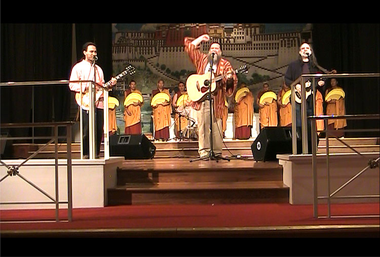

25th Annual Tibet Day
"Tibetan & Chinese Tales of Tibet"
Come Celebrate Bay Area Friends of Tibet's 25th Tibet Day
21st Anniversary of the Dalai Lama’s Nobel Peace Prize
You are Cordially Invited to Attend our 25th Anniversary of Tibet Day Community and Cultural Fair
WHEN: Saturday December 11, 2010 11 am to 7 pm
Evening Performance 8pm to 11pm.
WHERE: Fort Mason Conference Center
(MAP)
San Francisco
DONATION:
$10 Adults, $5 Children 12 and under.
Free with current paid BAFoT membership
DAYTIME FILM FESTIVAL (included with admission)
- Richard Gere is my Hero
- Tibet: Spirit in Chains
- Tibet: Murder in the Snow
- Blessings: Journey to Nangchen
BAFOT secretary and filmmaker Barbara Green worked on Blessings, which was shot in eastern Tibet.
EVENING CONCERT (separate admission) with these performers:
- Phurbu T Namgyal
- Dharma Bums
- Tenzin Dolma
- TseringCho
- Tsering Lodu
- TANC children's chorus
- Karma Moffet
- Semshug Phunda
- Su Wai & Klaya, Burmese harp and dance
Experience a unique and enchanting Saturday at this Tibetan cultural fair and watch the creation of a Tibetan Sand Mandala, which is a picture of Universal Compassion.
BAFoT is pleased to invite you to our celebration of all things Tibetan in San Francisco. Tibet Day is the Bay Area's annual tradition and celebration of Tibetan art, politics, culture, and music! Come enjoy the unique people and culture of Tibet, and celebrate dialogue with friends. Learn more about Tibetan culture through discussions and film. Buy wonderful holiday gifts from local Tibetan and Himalayan merchants. Enjoy a Tibetan-Chinese panel discussion at 5 PM.
Watch “Sand Painting” in action as the monks of Drepung Loseling Phukhang Monastery make a blueprint for world peace as part of their U.S. West Coast Tour.
Tenzin N. Tethong, candidate for Kalon, Tripa, Prime Minister, of the Tibetan Government-in-Exile, will speak at 3 PM.
World-acclaimed Tibet pop star Phurbu T.Namgyal will highlight the evening performance. Child-star, Tenzin Dolma traveling from New York, New York will perform traditional Tibetan songs. Tibetan artist, TseringCho will also perform. Her voice has been featured in musician and composer Jah Wobble's album, "Mu;" a Buddha Bar compilation CD; the film, "Pirates of the Caribbean;" and in many movies and other media. The lovable musical group, Dharma Bums will come back to Tibet Day for a second year in a row and requests your help to find further “gigs.” Semshug Phunda, the Tibetan “Brothers of Courage” will join the evening performance. Wonderful music will be provided by Su Wai, a very accomplished musician playing the Classical Burmese Harp (accompanying her own vocals). Burmese performer and dancer, Klaya will also join her.
Watch cultural and political Tibetan films such as “Tibet: Murder in the Snow” and “Richard Gere is my Hero,” with film maker Tashi Wangchuk who will be available for questions and answers.” “Journey to Nangchen: The Tsoknyi Nuns of Tibet” will also be shown and contributing filmmaker Barbara Green will be on hand to answer questions. Further, Pat Stengle will be available for the screening of her documentary, “Tibet: Spirit in Chains.”
BAFoT President Giovanni Vassallo will give an update on his recent trip to India to attend the 6th International Tibet Support Group meeting facilitated by the Department of Information and International Relations of the Tibetan Governmentin-Exile.
Tibet Day will feature delicious Tibetan food and numerous Tibetan vendors and nonprofit organizations.
Tibetan pop star Phurbu T. Namgyal will join us for the evening concert.
Tsering Cho
Tsering Chowas born in India to the Gyangzurtsang, a family of noble descent from Kutse in eastern Tibet. TseringCho first recorded these chants in the 1990s with Heart of Asia, a Singapore based record company. Her voice has been featured in muscian and composer Jah Wobble's album, "Mu;" a Buddha Bar compilation CD; the album "Waterbone," produced by Jimmy Waldo and D. Kendell Jones; the film, "Pirates of the Caribbean;" the Bollywood film, "Garwale Baharwale;" and in many other media.
Su Wai
Su Wai plays the Saung Gauk (Burmese harp). She was born and raised in Burma, where she was inspired by hearing her father play Burmese mandolin in the evenings in the small village where they lived. She studied with a Burmese harp player and was admitted into the Cultural University, where she excelled in harp and other studies. She is not only proficient in the ancient royal classical repertoire, the Mahagita, but also in modern Asian and Western pop music. She and her husband live in the Bay Area, where she is very popular in the local Burmese community.
KLAYA
Kayla is from Rangoon Burma. Imbued with an artistic and creative nature, she made her dancing premiere at the age of 5. She has been performing traditional Burmese dances in the Bay Area since 2005. This is her third guest appearance at Tibet Day. Among her interests is preserving and sharing the great traditional arts of Burma. A teacher of note within the Burmese community. she also tutors non-Burmese. KLAYA and SU WAi often collaborate as sisters in the arts.

The Dharma Bums will perform at the evening concert
Semshug Pundha will perform at the evening concert

His Holiness Dalai Lama with members of Bay Area Friends of Tibet September 2003
Mission:
The mission of BAFoT is to study, promote interest in, and actively preserve Tibetan culture in all its aspects; to educate the general public in matters pertaining to Tibet and the Tibetan people; and to provide assistance to Tibetans.
Announcements
- Tibetans and supporters from all over US headed to DC to protest Xi Jinping’s Visit
- Leader Nancy Pelosi's speech on March 10, 2015
- China: Human #Rights365 = Human Rights for All
- Humanitarian China note of thanks for Friends of Tibet solidarity on Tiananmen 25th anniversary
- Dhondup Wangchen released, thanks supporters
- Statement of Tashi Lhunpo Monastery on the Panchen Lama's 25th Birthday
- Rep. Pelosi's statement on March 10
- Dhondup Wangchen Campaign: "Unchain The Truth"
- Appeal for help for Phuntsokling Tibetan Settlement in Odisha
- Committee to Project Journalists concerned about Dhondup Wangchen
Subscribe to our email list

© 2008 - 2012 Bay Area Friends of Tibet